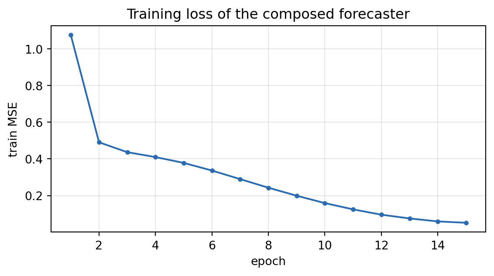

nn.Module Design Patterns: Building Reusable Time-Series Blocks
Data Science
Artificial Intelligence
PyTorch
A practical guide to structuring PyTorch models as reusable, composable nn.Module blocks. We cover what nn.Module actually manages (parameters, buffers, submodules), build a residual temporal block with an explicit shape contract, compose it with ModuleList, and assemble a working multi-step forecaster—then measure whether the abstraction earns its keep.
Author
Prof. Shin
Published
August 3, 2026
[Concept Visualization] A single reusable TemporalBlock composed into a stacked encoder and forecasting head.
Most PyTorch models start as a single class where __init__ declares two dozen layers and forward threads a tensor through all of them by hand. It works until you need a second variant of the same architecture, a slightly deeper stack, or a unit test for one component. At that point the monolithic module becomes the bottleneck: nothing can be reused, nothing can be tested in isolation, and every configuration change means editing forward directly.
The alternative is to treat nn.Module the way it was designed to be treated—as a composable unit with a clear input/output contract. This post builds a small, reusable time-series library from the ground up: a residual temporal block, a config-driven encoder that stacks it, and a forecaster that wraps everything. Along the way we look at the mechanics that make composition work, and we end by actually training the composed model so we can ask whether the extra structure pays for itself.
What an nn.Module Actually Manages
Before designing blocks, it helps to be precise about what a module tracks. When you assign an nn.Parameter or a submodule to self inside __init__, PyTorch registers it automatically so that .parameters(), .to(device), and .state_dict() all find it. There are three distinct kinds of state:
Parameters are learned tensors with requires_grad=True; the optimizer updates them.
Buffers are tensors that belong to the module’s state but receive no gradient—running normalization statistics are the canonical example. They persist in state_dict and move with .to(device), but the optimizer never touches them.
Submodules are other nn.Module instances; assigning one nests its parameters and buffers under the parent.
Getting this distinction right is the foundation of every pattern below. A buffer stored as a parameter would be corrupted by gradient updates; a parameter stored as a plain tensor would silently never train.
A Reusable Block with an Explicit Shape Contract
The core unit is a residual convolutional block over the channel dimension. The single most useful thing you can do for reusability is write down the shape contract as a docstring and never deviate from it. Here we fix the convention (B, C, L)—batch, channels, length—and preserve length with 'same' padding, so the block can be stacked without any external bookkeeping. The residual skip connection follows He et al. (2016); when input and output channel counts differ, a 1×1 convolution projects the skip path to match.
Code
import torchimport torch.nn as nntorch.manual_seed(0)class TemporalBlock(nn.Module):"""A residual 1D-conv block over (B, C, L) tensors. Shape contract: input : (B, C_in, L) output: (B, C_out, L) # length preserved by 'same' padding """def__init__(self, c_in: int, c_out: int, kernel_size: int=3, dropout: float=0.1):super().__init__() padding = (kernel_size -1) //2# 'same' padding for odd kernelsself.conv1 = nn.Conv1d(c_in, c_out, kernel_size, padding=padding)self.conv2 = nn.Conv1d(c_out, c_out, kernel_size, padding=padding)self.norm = nn.BatchNorm1d(c_out)self.act = nn.GELU()self.drop = nn.Dropout(dropout)# 1x1 conv to match channels on the skip path when c_in != c_outself.proj = nn.Conv1d(c_in, c_out, 1) if c_in != c_out else nn.Identity()def forward(self, x: torch.Tensor) -> torch.Tensor: residual =self.proj(x) h =self.act(self.conv1(x)) h =self.drop(h) h =self.norm(self.conv2(h))returnself.act(h + residual)block = TemporalBlock(c_in=3, c_out=16, kernel_size=5)x = torch.randn(8, 3, 64) # (B, C_in, L)y = block(x)print(f"input : {tuple(x.shape)}")print(f"output: {tuple(y.shape)}")print(f"trainable params in one block: {sum(p.numel() for p in block.parameters())}")
input : (8, 3, 64)
output: (8, 16, 64)
trainable params in one block: 1648
The block leaves length untouched and changes only the channel count, exactly as the contract promises. Because the interface is fixed, the block never needs to know where it sits in a larger network—that is what makes it composable.
Composition: ModuleList and Config-Driven Construction
Once a block honours a shape contract, stacking it is trivial. The key detail is that a plain Python list of modules is invisible to PyTorch: parameters inside a bare list are never registered. nn.ModuleList exists precisely to hold a variable number of submodules while keeping them discoverable. Driving the widths from a config list turns “make the model deeper” into a one-line change rather than an edit to forward.
Code
class TemporalEncoder(nn.Module):def__init__(self, c_in: int, channels: list[int], kernel_size: int=3):super().__init__() dims = [c_in] + channelsself.blocks = nn.ModuleList( TemporalBlock(dims[i], dims[i +1], kernel_size)for i inrange(len(channels)) )def forward(self, x: torch.Tensor) -> torch.Tensor:for blk inself.blocks: x = blk(x)return xenc = TemporalEncoder(c_in=3, channels=[16, 32, 32], kernel_size=3)h = enc(x)print(f"encoder output: {tuple(h.shape)}")print(f"num stacked blocks: {len(enc.blocks)}")print(f"encoder params: {sum(p.numel() for p in enc.parameters())}")
For a fixed linear pipeline nn.Sequential would be even terser, but ModuleList keeps the explicit forward loop, which matters the moment a block needs a skip connection across the stack, an auxiliary output, or conditional execution. nn.ModuleDict is the analogue when blocks are addressed by name rather than position.
Buffers versus Parameters
Normalization is where the buffer/parameter distinction becomes concrete. The standardizer below keeps running mean and variance so that inference uses stable statistics rather than a single test batch. These tensors must survive state_dict() round-trips and follow the model to the GPU, yet they must never receive a gradient. register_buffer expresses exactly that—the same mechanism nn.BatchNorm1d uses internally (Ioffe & Szegedy, 2015).
Code
class RunningStandardizer(nn.Module):"""Standardizes (B, C, L) using running stats stored as *buffers*, not parameters -- they persist in state_dict but never get gradients."""def__init__(self, c: int, momentum: float=0.1):super().__init__()self.momentum = momentumself.register_buffer("running_mean", torch.zeros(c))self.register_buffer("running_var", torch.ones(c))def forward(self, x: torch.Tensor) -> torch.Tensor:ifself.training: batch_mean = x.mean(dim=(0, 2)) batch_var = x.var(dim=(0, 2), unbiased=False)with torch.no_grad():self.running_mean.mul_(1-self.momentum).add_(self.momentum * batch_mean)self.running_var.mul_(1-self.momentum).add_(self.momentum * batch_var) mean, var = batch_mean, batch_varelse: mean, var =self.running_mean, self.running_varreturn (x - mean[None, :, None]) / torch.sqrt(var[None, :, None] +1e-5)std = RunningStandardizer(c=3)_ = std(x) # a training-mode pass updates the buffersfor name, buf in std.named_buffers():print(f"buffer {name:14s} shape={tuple(buf.shape)} requires_grad={buf.requires_grad}")print("learned parameters:", [n for n, _ in std.named_parameters()] or"none")
The module has state but no learnable parameters, and the buffers report requires_grad=False. If these had been declared as nn.Parameter, the optimizer would have dragged the running statistics around during training and destroyed their meaning.
Assembling the Forecaster and Initializing Weights
Now the pieces compose into a full model. The forecaster accepts the more common (B, L, C) layout, transposes once to the block convention, pools over time, and maps to a multi-step horizon. Weight initialization is handled with self.apply(...), which walks every submodule recursively—one place to set a consistent scheme (Kaiming initialization from He et al., 2015) instead of scattering init calls through every block.
Code
class Forecaster(nn.Module):"""(B, L, C_in) -> (B, horizon) single-target multi-step forecaster."""def__init__(self, c_in: int, channels: list[int], horizon: int, kernel_size: int=3):super().__init__()self.standardize = RunningStandardizer(c_in)self.encoder = TemporalEncoder(c_in, channels, kernel_size)self.head = nn.Linear(channels[-1], horizon)self.apply(self._init_weights)@staticmethoddef _init_weights(m: nn.Module) ->None:ifisinstance(m, (nn.Conv1d, nn.Linear)): nn.init.kaiming_normal_(m.weight, nonlinearity="relu")if m.bias isnotNone: nn.init.zeros_(m.bias)def forward(self, x: torch.Tensor) -> torch.Tensor: x = x.transpose(1, 2) # (B, L, C) -> (B, C, L) x =self.standardize(x) h =self.encoder(x) # (B, C_last, L) h = h.mean(dim=-1) # global average pool over timereturnself.head(h) # (B, horizon)model = Forecaster(c_in=3, channels=[16, 32, 32], horizon=12)xb = torch.randn(8, 64, 3) # (B, L, C)out = model(xb)print(f"model input : {tuple(xb.shape)}")print(f"model output: {tuple(out.shape)}")print(f"total params: {sum(p.numel() for p in model.parameters())}")print("top-level submodules:", [n for n, _ in model.named_children()])
model input : (8, 64, 3)
model output: (8, 12)
total params: 12988
top-level submodules: ['standardize', 'encoder', 'head']
Nothing in Forecaster reaches inside a block. Each component exposes a tensor interface, and the parent only wires interfaces together. Swapping the convolutional encoder for an LSTM-based one would touch a single line, because the shape contract at the encoder boundary is fixed.
Does the Abstraction Pay Off?
Structure is only worth it if the resulting model trains. We fit the composed forecaster on a synthetic three-channel series—sums of sines with additive noise—predicting the next twelve steps of channel 0 from a 64-step context. The split is chronological to avoid look-ahead leakage.
Code
import numpy as npnp.random.seed(0)def make_series(n=4000): t = np.arange(n) series = np.stack([ np.sin(2* np.pi * t /50) +0.1* np.random.randn(n), np.sin(2* np.pi * t /37+1.0) +0.1* np.random.randn(n), np.cos(2* np.pi * t /24) +0.1* np.random.randn(n), ], axis=1)return series.astype(np.float32)L, H =64, 12def windows(arr, L, H): xs, ys = [], []for i inrange(len(arr) - L - H): xs.append(arr[i:i + L]); ys.append(arr[i + L:i + L + H, 0])return np.stack(xs), np.stack(ys)series = make_series()X, Y = windows(series, L, H)n_train =int(0.8*len(X)) # chronological splitXtr, Ytr = torch.tensor(X[:n_train]), torch.tensor(Y[:n_train])Xte, Yte = torch.tensor(X[n_train:]), torch.tensor(Y[n_train:])model = Forecaster(c_in=3, channels=[16, 32, 32], horizon=H)opt = torch.optim.Adam(model.parameters(), lr=1e-3)lossfn = nn.MSELoss()losses, bs = [], 128model.train()for epoch inrange(15): perm = torch.randperm(len(Xtr)); ep =0.0for i inrange(0, len(Xtr), bs): idx = perm[i:i + bs] opt.zero_grad() loss = lossfn(model(Xtr[idx]), Ytr[idx]) loss.backward(); opt.step() ep += loss.item() *len(idx) losses.append(ep /len(Xtr))model.eval()with torch.no_grad(): pred_te = model(Xte) test_mse = lossfn(pred_te, Yte).item() test_mae = (pred_te - Yte).abs().mean().item()print(f"train windows: {tuple(Xtr.shape)}, test windows: {tuple(Xte.shape)}")print(f"final train MSE: {losses[-1]:.4f}")print(f"test MSE: {test_mse:.4f} | test MAE: {test_mae:.4f}")
train windows: (3139, 64, 3), test windows: (785, 64, 3)
final train MSE: 0.0520
test MSE: 0.0360 | test MAE: 0.1525
Code
import matplotlib.pyplot as pltfig, ax = plt.subplots(figsize=(6, 3.4))ax.plot(range(1, len(losses) +1), losses, marker="o", ms=3, color="#2b6cb0")ax.set_xlabel("epoch"); ax.set_ylabel("train MSE")ax.set_title("Training loss of the composed forecaster")ax.grid(alpha=0.3); fig.tight_layout(); plt.show()

Figure 1: Training MSE per epoch for the composed forecaster.
The loss falls smoothly and the test error lands close to the training error, which is what we expect on a stationary synthetic signal with a fixed random seed—the abstraction did not get in the way of optimization. The forecast on a held-out window shows where the model does well and where it does not:
Code
k =5ctx, true, fc = Xte[k, :, 0].numpy(), Yte[k].numpy(), pred_te[k].numpy()fig, ax = plt.subplots(figsize=(6.4, 3.4))ax.plot(range(L), ctx, color="#4a5568", label="context (ch 0)")ax.plot(range(L, L + H), true, color="#2f855a", marker="o", ms=3, label="target")ax.plot(range(L, L + H), fc, color="#c53030", marker="x", ms=4, ls="--", label="forecast")ax.axvline(L -0.5, color="gray", ls=":", lw=1)ax.set_xlabel("time step"); ax.set_ylabel("value")ax.set_title("One test window: context, target, forecast")ax.legend(fontsize=8); ax.grid(alpha=0.3); fig.tight_layout(); plt.show()
Figure 2: One test window: context (channel 0), target horizon, and forecast.
The model tracks the phase and level of the target but underestimates the amplitude near the peak—a familiar signature of global average pooling, which smooths away extremes. That is a modelling limitation, not a structural one; because the head is a separate module, replacing the pooling with something sharper is a local edit.
Design Trade-offs
Composability makes it cheap to change capacity, but capacity is not free. The figure below counts parameters as we deepen the block stack, holding everything else fixed.
Code
depths = [[16], [16, 32], [16, 32, 32], [16, 32, 64, 64]]counts = [sum(p.numel() for p in Forecaster(3, ch, H).parameters()) for ch in depths]fig, ax = plt.subplots(figsize=(6, 3.4))ax.bar([str(len(d)) for d in depths], counts, color="#6b46c1")ax.set_xlabel("number of stacked TemporalBlocks"); ax.set_ylabel("total parameters")ax.set_title("Parameter count grows with block depth")for i, c inenumerate(counts): ax.text(i, c, f"{c:,}", ha="center", va="bottom", fontsize=8)fig.tight_layout(); plt.show()
Figure 3: Total parameter count as the number of stacked TemporalBlocks grows.
Each added block roughly doubles the count here because we also widen the channels; on small datasets that path leads straight to overfitting. The value of the pattern is that this experiment took one edited list, not a rewritten model—the design makes capacity a dial you can turn and measure.
When These Patterns Help and When They Hurt
The block-and-compose approach earns its keep when you expect to run variants: several depths, an ablation with the residual removed, or the same encoder feeding two different heads. It also makes components unit-testable in isolation, since each honours a shape contract you can assert against.
It hurts when applied prematurely. A model you will train once and discard does not need three levels of abstraction, and over-generalized blocks—every hyperparameter exposed, every layer optional—become harder to read than the monolith they replaced. Config-driven construction also shifts a class of errors from “obvious crash in forward” to “silently wrong shape three blocks later,” which is why the explicit shape contract and shape assertions matter more, not less, as composition deepens.
Conclusion
The practical payoff of designing with nn.Module is not elegance but leverage: a fixed shape contract per block, ModuleList/ModuleDict for discoverable composition, register_buffer for non-learned state, and apply for one-place initialization together turn architectural changes into local edits. The trained forecaster confirms the structure does not cost accuracy on this task. The judgement call is dosage—enough abstraction to support the variants you will actually build, and no more. The most useful next step is to make the shape contract executable, adding lightweight shape assertions inside forward so that composition errors surface where they occur rather than several blocks downstream.
References
He, K., Zhang, X., Ren, S., & Sun, J. (2016). Deep Residual Learning for Image Recognition. Proceedings of the IEEE Conference on Computer Vision and Pattern Recognition (CVPR), 770–778. https://doi.org/10.1109/CVPR.2016.90
He, K., Zhang, X., Ren, S., & Sun, J. (2015). Delving Deep into Rectifiers: Surpassing Human-Level Performance on ImageNet Classification. Proceedings of the IEEE International Conference on Computer Vision (ICCV), 1026–1034. https://doi.org/10.1109/ICCV.2015.123
Ioffe, S., & Szegedy, C. (2015). Batch Normalization: Accelerating Deep Network Training by Reducing Internal Covariate Shift. Proceedings of the 32nd International Conference on Machine Learning (ICML), 448–456.
Paszke, A., et al. (2019). PyTorch: An Imperative Style, High-Performance Deep Learning Library. Advances in Neural Information Processing Systems (NeurIPS), 32, 8024–8035.